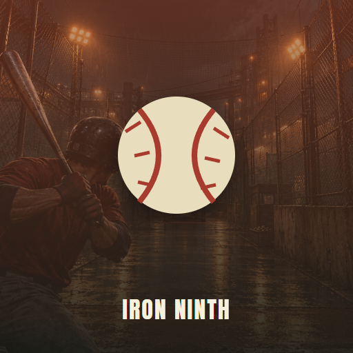

<- all projects

Iron Ninth
PC
Volume
Live
Time your swing. Break the cage circuit. Reclaim your name.
Disgraced veteran Ren Sato returns to the underground batting cages after a match-fixing scandal. The pitcher names the pitch, you aim at the ring the ball curves toward and swing as it arrives, and perfect timing hits harder. Every pitcher has a tell, every win changes the people in your corner, and the last choice is a contract or the truth. Draft a batting perk after each inning. There are 24 story series across 6 cages and 8 rivals, 3 story acts and 2 endings, 30 batting perks, 3 stances and 5 pitch families, with a daily challenge and an endless ladder.